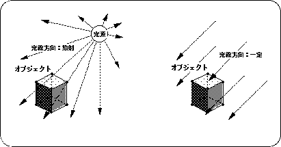
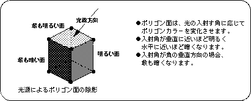

Return to previous page | Return to menu ｜ Go to next page
This chapter explains how to set the light source in SGL. By using a light source, objects displayed in 3D graphics are shaded, enabling more realistic images to be drawn.
A light source typically contains the following information:
However, it takes a lot of time to calculate all of these as light source information and draw them accurately. Therefore, SGL selects only the light source direction from these light source information and reflects it in the polygon drawing.
Also, with regard to the direction of light, normal light is defined as radiation from one point, which is too time consuming to calculate. Therefore, assuming that the light source position is at infinity, the light direction is always assumed to be emitted from the same direction regardless of the coordinate position of the object.

The change due to the light source on the object surface is determined by the direction of the ray and the orientation of the normal vector of each polygon face. An image of this is shown below.
